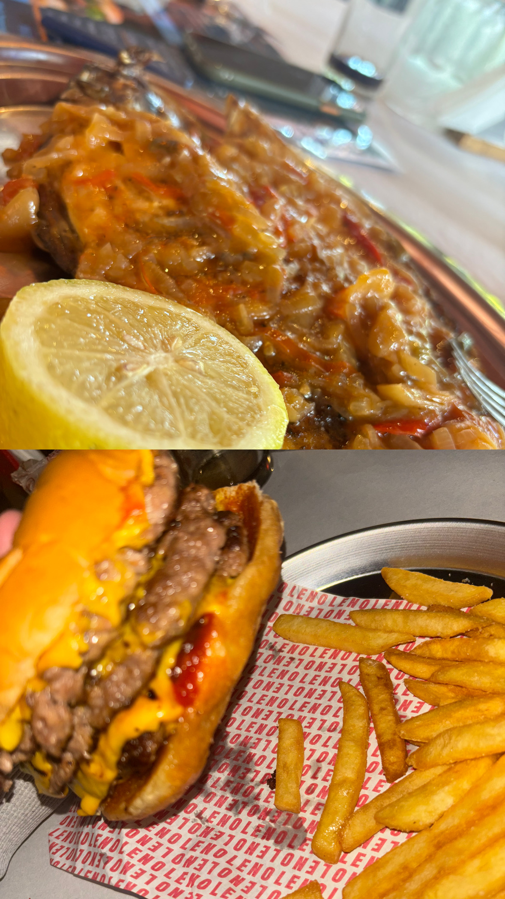
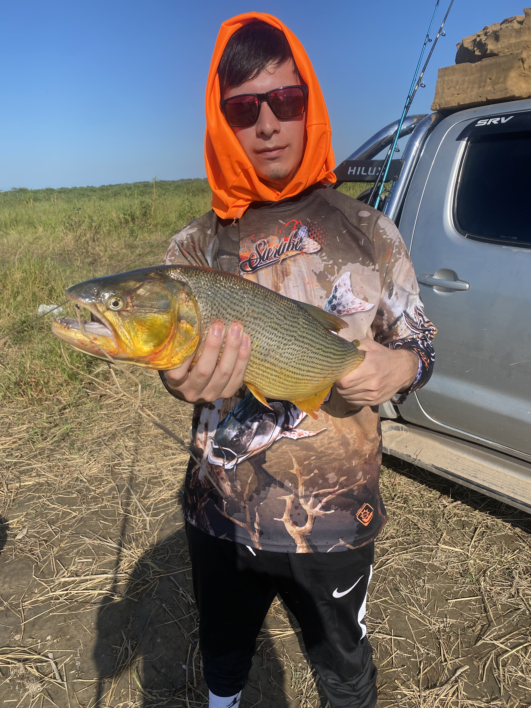

Me gusta:
Ir al gimnasio

Salir a comer

Salir de pesca
Soy de la Provincia de Tucumán
Departamento Cruz Alta
Ciudad de Alderetes
Correo: fabricio.gettar@gmail.com
Numero de Telefonó: 3813016175
Me reconozco como una persona dinámica y orientada a resultados con experiencia en ventas, atención al cliente, crecimiento de redes sociales, diseñador y editor de multimedia.
Tengo un buen nivel en identificar oportunidades de negocio, desarrollar relaciones sólidas con los clientes y cerrar ventas.
Buenas habilidades en comunicación, edición, negociación y control de mercado, con un enfoque constante en superar los objetivos de la empresa.
Ir al gimnasio
Salir a comer
Salir de pesca